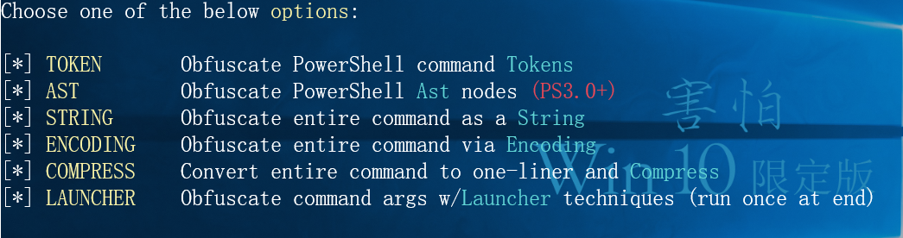
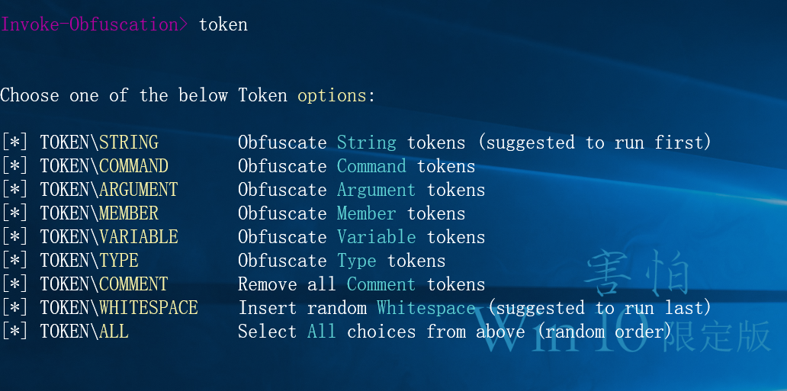
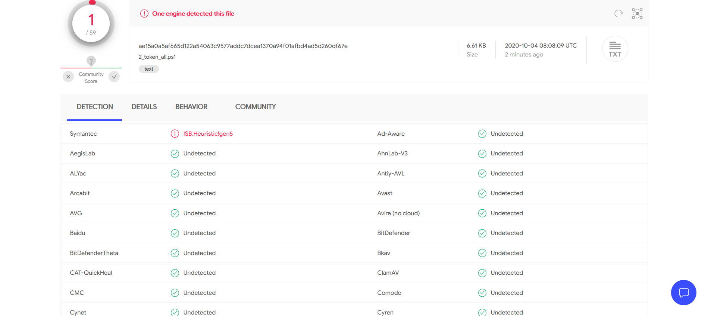
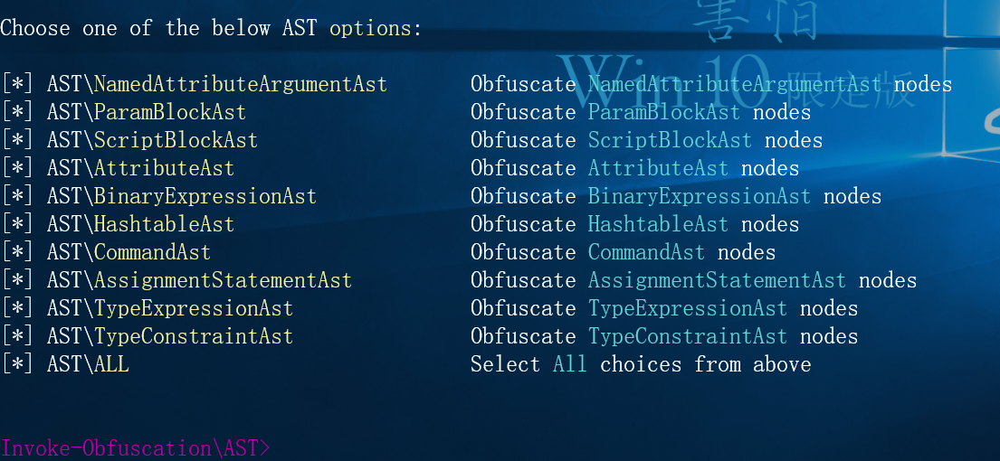

来自之前cnblog的博客
源地址：https://www.cnblogs.com/This-is-Y/p/13767546.html
github地址：https://github.com/danielbohannon/Invoke-Obfuscation
使用的CS生成的ps1文件
Attacks->Payload Generator->powershell
安装方法这里跳过
启动：
跳转到文件目录： cd ‘E:\Safe_Tool\webshell\Invoke-Obfuscation-master'
导入模块： Import-Module .\Invoke-Obfuscation.psd1
启动： Invoke-Obfuscation
设置需要操作的ps1文件
set scriptpath C:\Users\This_is_Y\Desktop\2.ps1 #设置脚本位置
英语不好，翻译了一下
选择以下选项之一:
令牌 混淆PowerShell命令令牌
AST 混淆PowerShell Ast节点(PS3.0+)
字符串 将整个命令混淆为字符串
编码 通过编码混淆整个命令
压缩 将整个命令转换为一行程序并进行压缩
发射器 混淆命令参数w /发射器技术(结束)运行一次
需要那个就输入哪个的英文（不区分大小写）
token
进入到token选项后，又会给一些选项
令牌\字符串\ 混淆字符串令牌(建议先运行)
令牌\命令\ 混淆命令令牌
令牌\参数\ 混淆参数令牌
令牌\成员\ 混淆成员令牌
令牌\变量\ 混淆变量令牌
令牌\类型\ 混淆类型令牌
标记\注释\ 删除所有注释标记
令牌\空格\ 插入随机空格(建议最后运行)
令牌\ALL \ 从上面选择所有选项(随机顺序)
这里我图方便直接一个alll了
输出加密后的文件
直接输出到当前目录下：out 2_token_all.ps1
也可以自己控制输出文件位置
（实测过火绒，2020.10.03）
virustotal.com上查杀率为1/59

AST：

机翻
AST\NamedAttributeArgumentAst 模糊NamedAttributeArgumentAst节点
AST\ParamBlockAst 模糊paramblock节点
AST\ScriptBlockAst 混淆ScriptBlockAst节点
AST\AttributeAst 模糊AttributeAst节点
AST\BinaryExpressionAst 模糊BinaryExpressionAst节点
AST\HashtableAst 模糊HashtableAst节点
AST\CommandAst 模糊CommandAst节点
AST\AssignmentStatementAst 模糊AssignmentStatementAst节点
AST\TypeExpressionAst 混淆TypeExpressionAst节点
AST\TypeConstraintAst 混淆TypeConstraintAst节点
AST\ALL 从上面选择所有选项
不太懂AST是什么，但是如果只看结果
这一类的混淆似乎不太好，用ALL测试一下，运行，火绒依然报毒